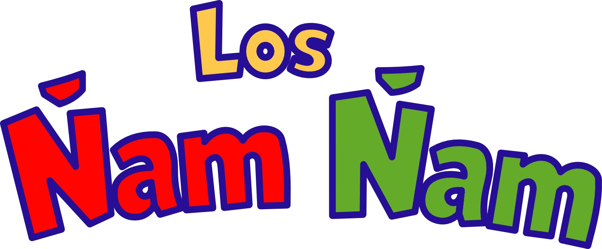
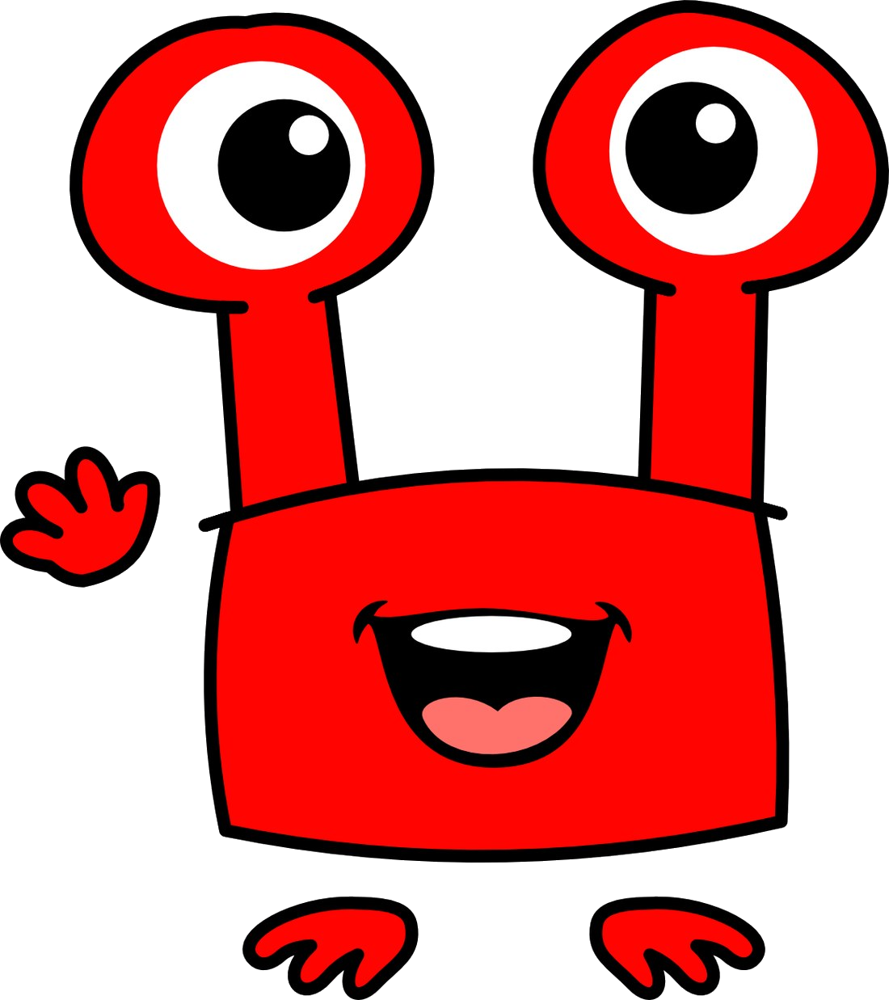
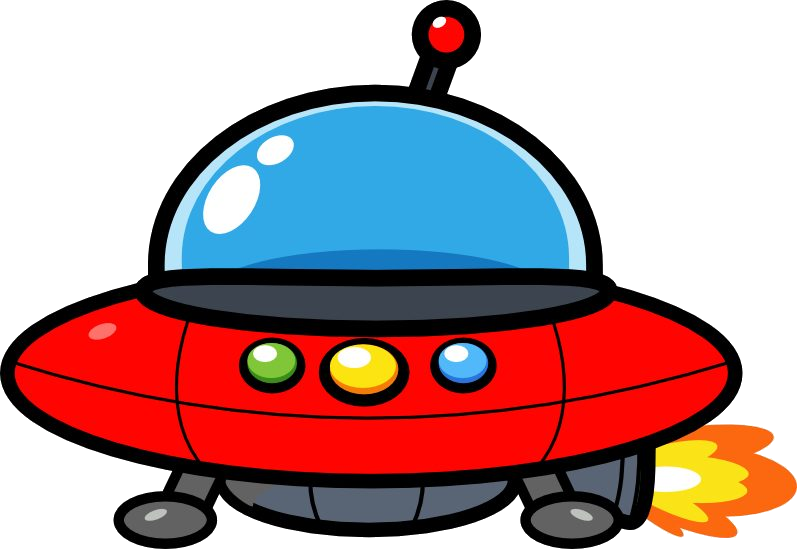
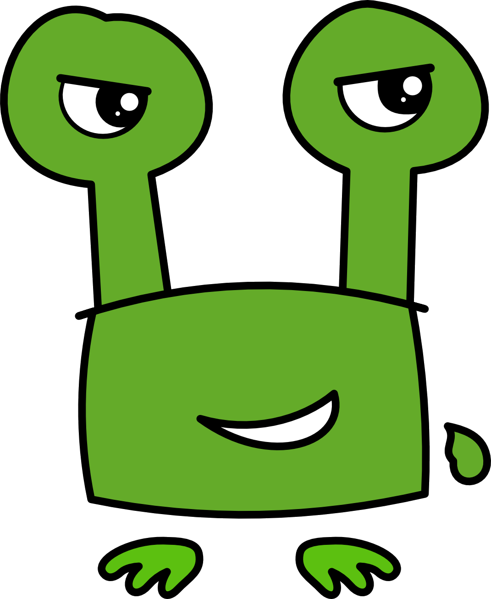

Roko
El Ñam Ñam rojo. Bueno, valiente y con unos ojos tan altos que ve más lejos que nadie.

Las aventuras de Roko y Grin, extraterrestres buenos, traviesos y muy curiosos




Roko y Grin descubren un puntito azul en el cielo y se lanzan a visitarlo. ¡Pero la atmósfera tiene otros planes!
Una nueva aventura de Roko, Grin y Tornillo está en camino.
El Ñam Ñam rojo. Bueno, valiente y con unos ojos tan altos que ve más lejos que nadie.
El Ñam Ñam verde. Travieso, listísimo y siempre con un plan… que casi nunca sale como pensaba.

El robot mecánico de Ñamlandia. Lo arregla todo, menos los líos de Grin.